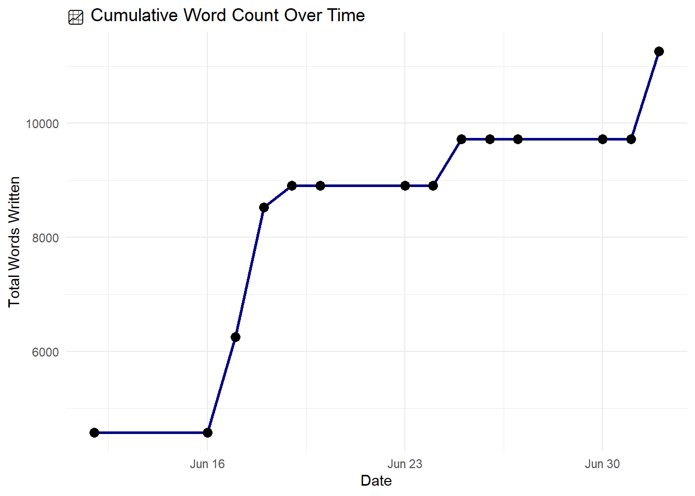
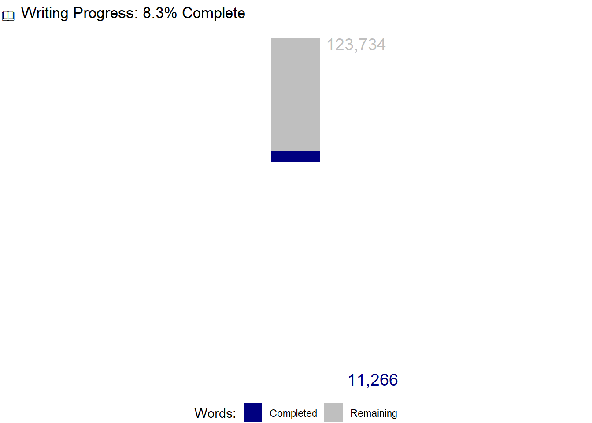

| Date | Start | End | Words | Focus |
|---|---|---|---|---|
| June 30, 2025 | NA | NA | 0 | |
| July 1, 2025 | NA | NA | 0 | |
| June 2, 2025 | 1030 | 1251 | 1,541 | Finished Chapter 2. |
Writing Log
Project Goals
- Polished Draft of Parts 1 & 2: Due August 16
- Structured Draft of Parts 3 & 4: Due October 15
- Self-Editing & Final Polish: October 16–October 29
- Final Proofing & Submission: October 30–October 31
- Daily Writing Commitment: 3 hours (Monday–Friday)
This week’s writing log:
Writing Stats
📝 Total Words Written: 11266
📈 Average Words per Day: 805
📆 Projected Completion Date (Weekdays Only): October 27, 2025


Complete Writing Log
| Date | Start | End | Words | Focus | cumulative_words |
|---|---|---|---|---|---|
| 2025-06-12 | 1017 | 1449 | 4581 | Table of Contents; Added detailed outline to each chapter (Note: some of the words captured for today were already there.) | 4581 |
| 2025-06-16 | NA | NA | 0 | I did not make time for writing, although I had it on the calendar. I spent the time grading and prepping online classes. | 4581 |
| 2025-06-17 | 1015 | 1238 | 1675 | I worked on the introduction chapter section titled Framing R’s Role for Public Managers | 6256 |
| 2025-06-18 | 0717 | 1039 | 2271 | Finished the draft of Chapter 1; finished the draft of the preface. | 8527 |
| 2025-06-19 | 0930 | 1420 | 380 | I worked on editing chapter 1. I spent far too much time working with the .css and .tex files to get callout boxes to render the way I wanted them to AND to have them render only in their respective formats. | 8907 |
| 2025-06-20 | NA | NA | 0 | 8907 | |
| 2025-06-23 | NA | NA | 0 | 8907 | |
| 2025-06-24 | NA | NA | 0 | 8907 | |
| 2025-06-25 | 1000 | 1200 | 818 | Began working on Chapter 2. | 9725 |
| 2025-06-26 | 1030 | 1200 | 0 | Polished Chapter 1 and 2. | 9725 |
| 2025-06-27 | NA | NA | 0 | 9725 | |
| 2025-06-30 | NA | NA | 0 | 9725 | |
| 2025-07-01 | NA | NA | 0 | I played golf! | 9725 |
| 2025-07-02 | 1030 | 1251 | 1541 | Finished Chapter 2. | 11266 |